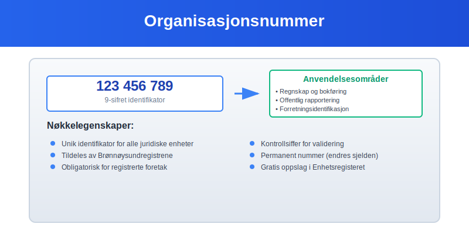
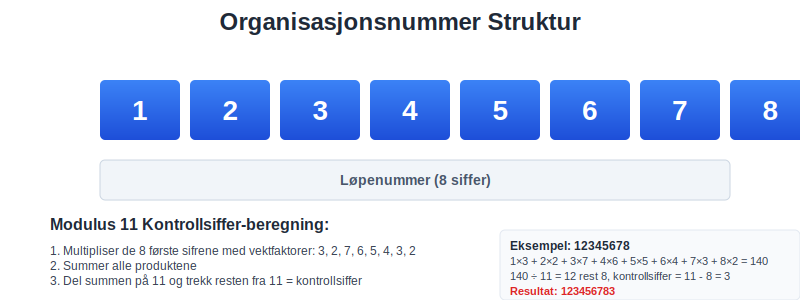
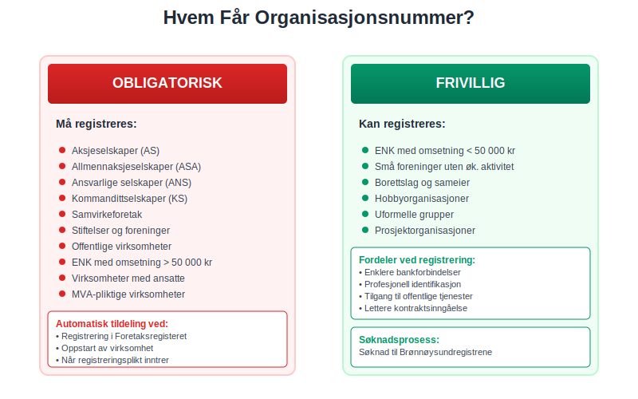
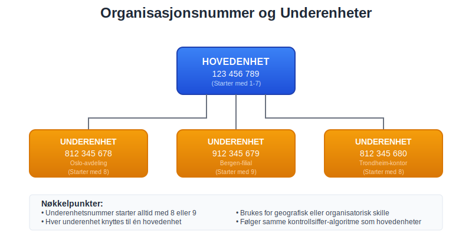
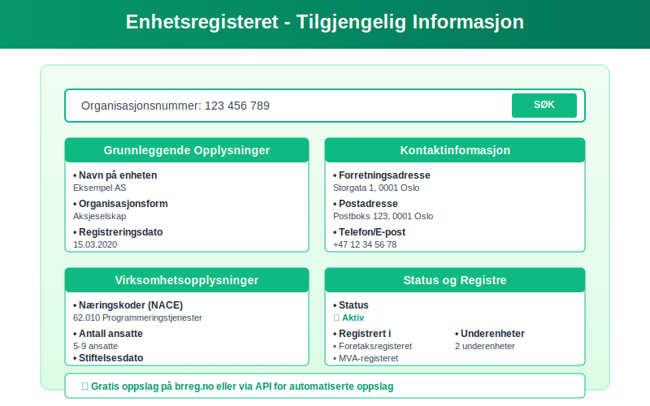
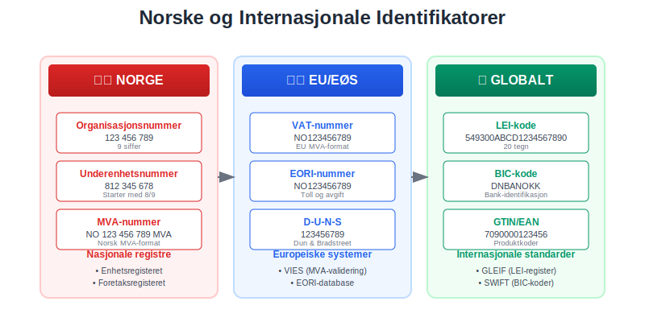
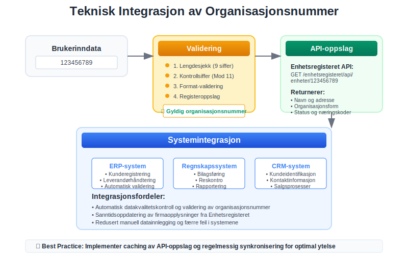

Et organisasjonsnummer er en unik ni-sifret identifikator som tildeles alle juridiske enheter i Norge. Dette nummeret er fundamentalt for norsk regnskap og forretningsvirksomhet, da det sikrer entydig identifikasjon av foretak og organisasjoner i alle offentlige registre.
I tillegg til organisasjonsnummer kan logistikk- og lagringssteder identifiseres med GLN-nummer, som er en global standard for lokasjonsidentifikasjon.

Hva er et Organisasjonsnummer?
Et organisasjonsnummer er en ni-sifret kode som fungerer som en digital identitet for juridiske enheter i Norge. Nummeret tildeles av Brønnøysundregistrene og er obligatorisk for alle enheter som registreres i Enhetsregisteret.
Struktur og Oppbygning
Organisasjonsnummeret består av ni siffer organisert som følger:
- De første åtte sifrene: Løpenummer tildelt av registermyndigheten
- Det niende sifferet: Kontrollsiffer beregnet etter Modulus 11-algoritmen

Kontrollsiffer-beregning
Kontrollsifferet beregnes ved hjelp av Modulus 11-algoritmen:
- De åtte første sifrene multipliseres med vektfaktorene 3, 2, 7, 6, 5, 4, 3, 2
- Produktene summeres
- Summen deles på 11, og resten trekkes fra 11
- Resultatet er kontrollsifferet (hvis resultatet er 11, blir kontrollsifferet 0)
Hvem Får Organisasjonsnummer?
Alle juridiske personer og enheter som registreres i Norge får tildelt organisasjonsnummer:
Obligatorisk Registrering
- Aksjeselskaper (AS)
- Allmennaksjeselskaper (ASA)
- Ansvarlige selskaper (ANS)
- Kommandittselskaper (KS)
- Samvirkeforetak
- Stiftelser og foreninger
- Offentlige virksomheter
Frivillig Registrering
- Enkeltpersonforetak med omsetning under 50 000 kr
- Små foreninger uten økonomisk aktivitet
- Borettslag og sameier

Organisasjonsnummer i Regnskap og Bokføring
Organisasjonsnummeret er sentralt i norsk regnskap og har flere viktige funksjoner:
Identifikasjon i Regnskapsrapporter
- Årsregnskap: Må inneholde organisasjonsnummer
- MVA-meldinger: Identifiserer avgiftspliktig enhet
- A-meldinger: Kobler lønnsopplysninger til riktig arbeidsgiver
- Skattemeldinger: Sikrer korrekt skattebehandling
Elektronisk Rapportering
Organisasjonsnummeret brukes i alle digitale tjenester:
- Altinn - for offentlig rapportering
- Regnskapsføring og ERP-systemer
- Bankforbindelser og betalingsløsninger
- Elektronisk fakturering
Organisasjonsnummer vs. Andre Identifikatorer
| Identifikator | Formål | Hvem får det | Antall siffer |
|---|---|---|---|
| Organisasjonsnummer | Juridiske enheter | Alle registrerte enheter | 9 |
| Fødselsnummer | Fysiske personer | Alle personer | 11 |
| D-nummer | Utenlandske personer | Ikke-bosatte | 11 |
| Underenhetsnummer | Avdelinger/filialer | Underenheter av hovedenhet | 9 |
Underenhetsnummer
Underenheter som avdelinger, filialer eller andre organisatoriske enheter får eget ni-sifret nummer:
- Starter alltid med sifrene 8 eller 9
- Følger samme kontrollsiffer-algoritme
- Knyttes til hovedenhetens organisasjonsnummer
- Brukes for geografisk eller organisatorisk skille

Praktisk Bruk av Organisasjonsnummer
I Forretningssammenheng
Organisasjonsnummeret brukes daglig i:
- Kontraktsinngåelse: Identifiserer kontraktspartene
- Fakturering: Påkrevd på alle fakturaer
- Bankforbindelser: Åpning av bedriftskontoer
- Forsikring: Identifikasjon av forsikringstaker
- Offentlige anbud: Kvalifikasjon og identifikasjon
I Regnskapssammenheng
- Bilagsføring: Identifiserer leverandører og kunder
- Reskontroføring: Kobler transaksjoner til riktig part
- Rapportering: Sikrer korrekt rapportering til myndigheter
- Revisjon: Verifisering av motparters identitet
Oppslag og Verifikasjon
Enhetsregisteret
Se vår fulle guide til Enhetsregisteret for detaljert informasjon om registerets formål, innhold og bruk.
Alle organisasjonsnummer kan slås opp i Enhetsregisteret:
- Gratis oppslag på Brønnøysundregistrenes nettsider
- API-tjenester for automatiserte oppslag
- Historiske data om endringer og status
- Kontaktinformasjon og organisasjonsstruktur
Viktige Opplysninger i Registeret
- Navn på enheten
- Organisasjonsform og juridisk status
- Adresse og kontaktinformasjon
- Næringskoder (NACE-koder)
- Registreringsdato og eventuelle endringer
- Status (aktiv, under avvikling, slettet)

Endringer og Oppdateringer
Når Endres Organisasjonsnummer?
Organisasjonsnummeret er permanent og endres normalt ikke. Unntak:
- Fusjon: Det overlevende selskapet beholder sitt nummer
- Fisjon: Nye enheter får nye organisasjonsnummer
- Omorganisering: Kan medføre nye nummer ved store endringer
- Gjenopprettelse: Slettede enheter kan få nytt nummer ved gjenopprettelse
Oppdatering av Opplysninger
Enheter må melde endringer til Enhetsregisteret:
- Navneendring: Innen en måned
- Adresseendring: Umiddelbart
- Organisasjonsform: Ved selskapsrettslige endringer
- Næringskoder: Ved endring av virksomhetsområde
Internasjonale Forhold
Utenlandske Enheter
Utenlandske selskaper som driver virksomhet i Norge:
- NUF (Norskregistrert Utenlandsk Foretak): Får norsk organisasjonsnummer
- Filial: Registreres med eget organisasjonsnummer
- Direkte virksomhet: Kan få organisasjonsnummer ved registreringsplikt
Internasjonale Standarder
Norge følger internasjonale standarder for enhetsidentifikasjon:
- LEI (Legal Entity Identifier): For finansielle rapporteringsformål
- EORI-nummer: For toll- og avgiftsformål i EU/EØS
- VAT-nummer: For merverdiavgiftsformål i EU/EØS

Juridiske Konsekvenser
Feil Bruk av Organisasjonsnummer
Misbruk av organisasjonsnummer kan få alvorlige konsekvenser:
- Identitetstyveri: Straffbart etter straffeloven
- Svindel: Bruk av andres nummer i forretningssammenheng
- Regnskapsbrudd: Feil identifikasjon i regnskapsrapporter
- Skatteunndragelse: Feilaktig rapportering til skattemyndighetene
Ansvar for Korrekt Bruk
Enheter har ansvar for:
- Korrekt oppgivelse av eget organisasjonsnummer
- Verifisering av motparters organisasjonsnummer
- Oppdatering av endringer i registeret
- Sikker håndtering av organisasjonsnummer i IT-systemer
Tekniske Aspekter
Validering av Organisasjonsnummer
Automatisk validering kan gjøres ved:
- Lengdesjekk: Må være nøyaktig 9 siffer
- Kontrollsiffer-validering: Modulus 11-algoritme
- Registeroppslag: Verifisering mot Enhetsregisteret
- Statussjekk: Kontroll av aktiv/inaktiv status
Integrasjon i IT-systemer
Regnskapssystemer bør:
- Automatisk validere organisasjonsnummer ved innlegging
- Hente opplysninger fra Enhetsregisteret via API
- Oppdatere automatisk ved endringer i registeret
- Sikre datakvalitet gjennom regelmessige kontroller

Fremtidige Utviklinger
Digitalisering og Automatisering
Fremtidige forbedringer inkluderer:
- Sanntidsoppdateringer: Automatisk synkronisering mellom registre
- Kunstig intelligens: Automatisk deteksjon av feil og avvik
- Blockchain-teknologi: Sikker og transparent registrering
- API-forbedringer: Bedre integrasjonsmuligheter
Europeisk Harmonisering
EU-initiativ for bedre samordning:
- Felles identifikatorer: Standardisering på tvers av land
- Automatisk utveksling: Informasjonsdeling mellom myndigheter
- Digitale tjenester: Grenseløse digitale tjenester
Sammendrag
Organisasjonsnummeret er fundamentalt for norsk næringsliv og regnskap. Det sikrer:
- Entydig identifikasjon av alle juridiske enheter
- Effektiv administrasjon av offentlige registre
- Sikker forretningsførsel mellom parter
- Korrekt regnskapsrapportering til myndigheter
For regnskapsførere og bedriftseiere er det essensielt å:
- Forstå organisasjonsnummerets rolle og betydning
- Bruke nummeret korrekt i alle sammenhenger
- Validere motparters organisasjonsnummer
- Holde egne opplysninger oppdatert i registeret
Ved å følge disse prinsippene sikrer man korrekt og lovlig bruk av organisasjonsnummeret i all forretningsvirksomhet og regnskapsføring.